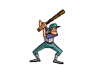
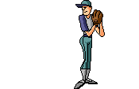
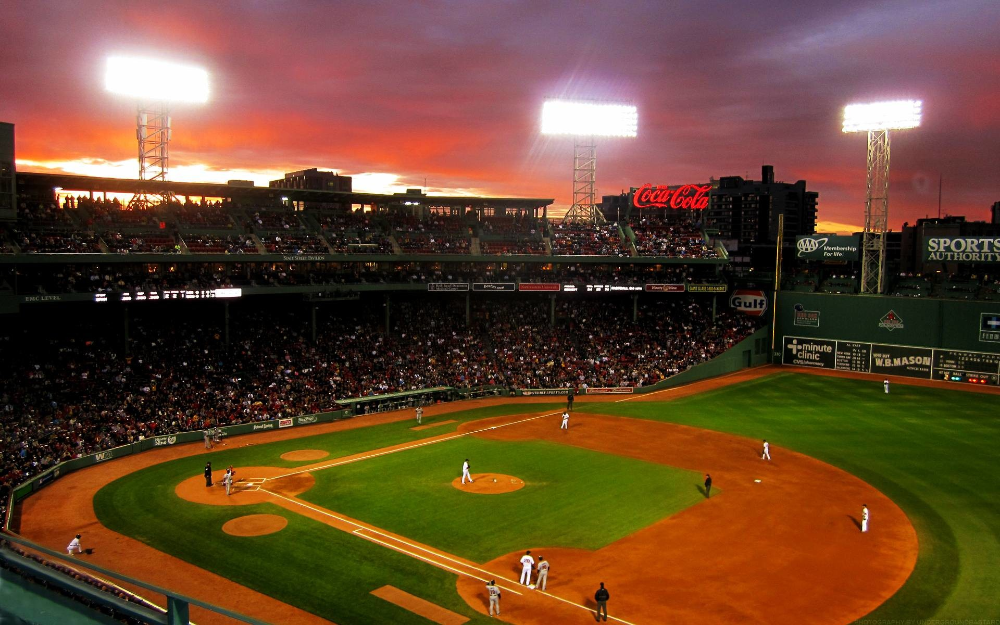

Pravila u bejzbolu

Teren
- Teren je u obliku dijamanta sa četiri baze.
- Razmak između baza je 27.4 metara (90 stopa).
- Razmak od kućne baze do brda gde se baca lopta (pitcher's mound) je 18.4 metara (60 stopa 6 inča).
- Vanjsko polje (outfield) je iza unutrašnjeg polja (infield) i obično se deli na tri sekcije: levo polje (left field), centar polje (center field) i desno polje (right field).

Bejzbol teren Fenway Park
Klikom na sliku otvara se detaljni dijagram terena
Igrači
- Svaki tim ima devet igrača na terenu.
- Pozicije na terenu su bacač (pitcher), hvatač (catcher), prvi bazmen (first baseman), drugi bazmen (second baseman), treći bazmen (third baseman), kratki stoper (shortstop), levo polje (left fielder), centar polje (center fielder) i desno polje (right fielder).
- Bacač (pitcher) je igrač u odbrani koji baca loptu, dok igrači na odbrani pokušavaju da ga eliminišu.
- Udarač (batter) je igrač koji udara palicu i iz tima koji je trenutno u napadu.
- Udarač (batter) pokušava da udari loptu koju pitcher baca i da trči ka prvoj bazi, dok igrači u odbrani pokušavaju da ga izbace.

Pozicije igrača na polju
Utakmica
- Obično se igra devet rundi (inning).
- Prvi napad započinje gostujući tim, a nakon njega ide domaćin
- Timovi se menjaju u napadu (udaranju palicom) i odbrani.
- Pobeđuje tim koji postigne više poena (runs).
Bacanje lopte
- Bacač (pitcher) baca loptu ka igraču na napadu (batter).
- Bacač mora da baci loptu preko kućne baze i između koljena i ramena igrača na napadu.
- Ako lopta padne van ovog područja, to se naziva ball, i igrač na napadu ne mora udariti loptu.
- Ako lopta padne unutar ovog područja, to se naziva udarac (strike), a igrač na napadu mora udariti loptu ili rizikuje da bude eliminisan.
- Igrač na napadu se eliminiše ako promaši loptu tri puta (strikeout)

Strike zona - prostor u koje pitcher treba da baci loptu
Bodovi
- Bod se postiže kada igrač u napadu dodirne sva četiri temena baze i vrati se na kućnu bazu.
- Više bodova se može postići jednim udarcem ako ima trkača na bazama.
- Igrač u napadu takođe može postići bod ako igrač u odbrani napravi grešku i dozvoli mu da se kreće prema kućnoj bazi.
- Tim sa najviše bodova na kraju igre pobedjuje.